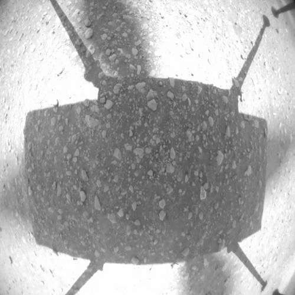

Ingenuity побачила Perseverance з повітряPerseverance's Navcam бачить IngenuityЧорно-біле зображення з третього польоту IngenuityКамери Perseverance бачать політ IngenuityЖурнал пілотів вертольота Марса Ingenuity Другий політ IngenuityТретє кольорове зображення, зроблене IngenuityДруге кольорове зображення, зроблене IngenuityПерше повітряне кольорове зображення МарсаДругий рейс Ingenuity, який бачив PerseveranceЗображення в польоті від другого польоту IngenuityПерший політ Ingenuity записав Mastcam-ZДіаграма висотоміра для першого польоту Ingenuity Перше чорно-біле зображення Ingenuity з повітряIngenuity відразу після обертанняСонячний масив вертольота МарсаВідпускаються леза Ingenuity Mastcam-Z дивиться на Ingenuity зблизька Перша кольорова прив'язка IngenuityIngenuity Розгорнута на Марсі